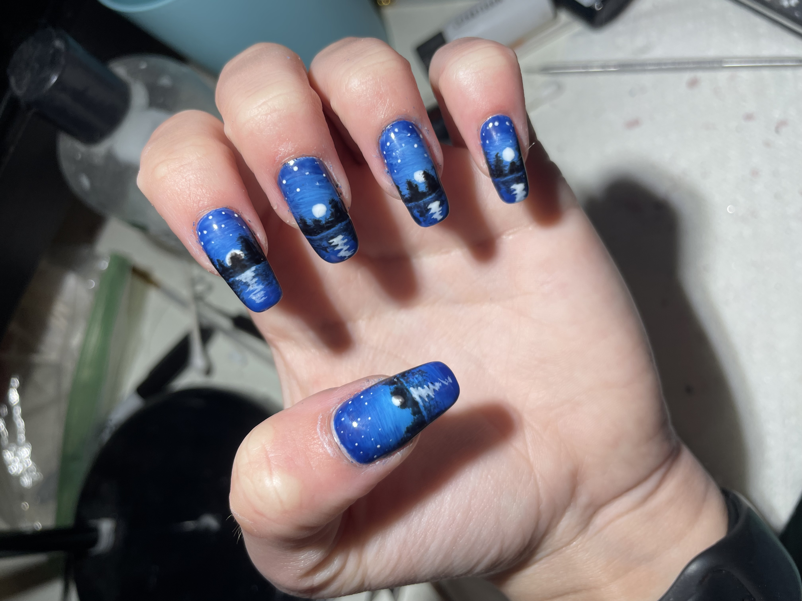
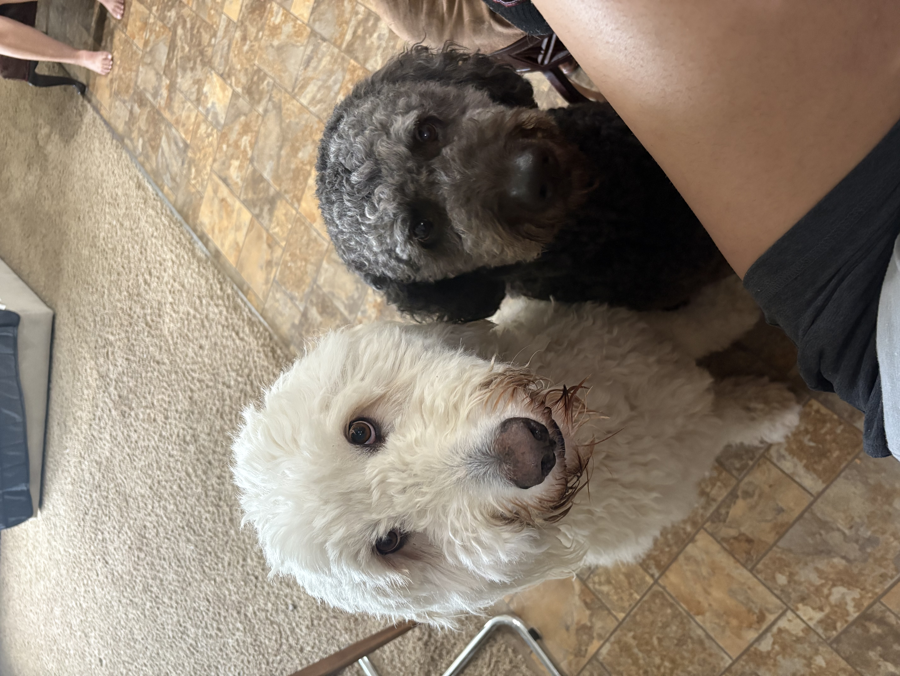

I discovered the world of computer programming when I was 12 years old. My dad was going through a chemotherapy transfusion, reading a book on database development and computer science. I asked him what it was, and spent hours interrogating him about it. He then informed me that I could begin courses on Khan Academy. It was there that I started an introduction to JavaScript course. Later in life, I found my true passion when I discovered ethical hacking. I relished the idea of being able to know so much about a database that I could not only expose its weaknesses but also find a solution for them. After many rough patches in life, I am now beginning a new journey. I am enrolled in St. Edward’s computer science program and concentrating in cybersecurity. What is ethical hacking

